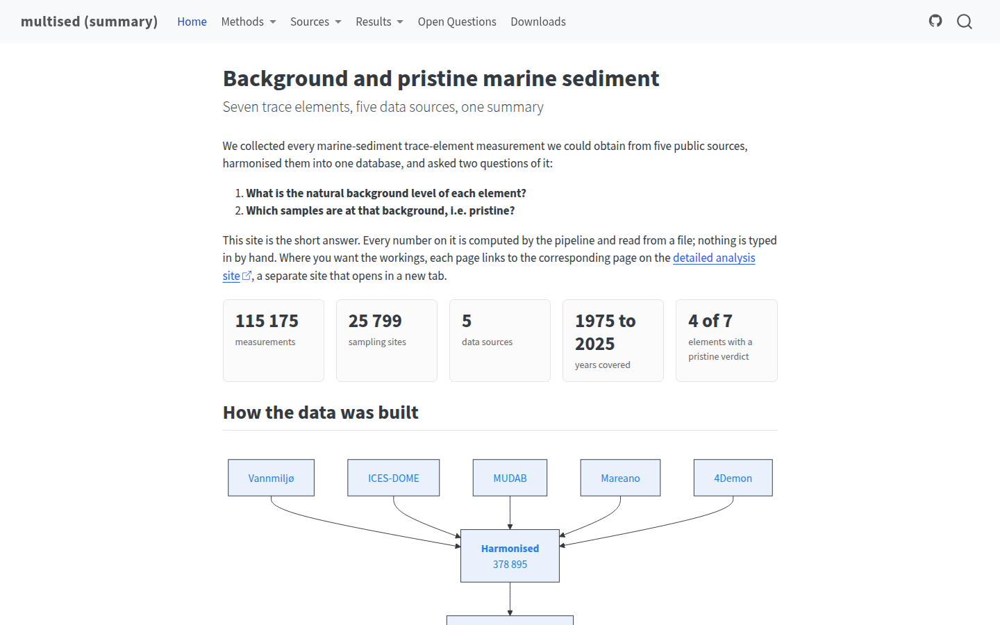

Natural background and pristine marine sediment, seven trace elements, five data sources
Takaya SaitoOctober 12, 2026
Updated web site
One site, two questions
seafood-hazards.github.io/multised-summary

The two questions
1. What is the natural level of each element?
2. Which samples sit at that level?
Methods
How we find natural levels
Sources
Five public data archives
Results
Seven elements side by side
Open Questions
What is still unsettled
Updated web site
From five archives to one database
VannmiljøICES-DOMEMUDABMareano4Demon
In plain wordsLike panning for gold. A lot of raw data goes in, and only the clean, trusted part comes out.
EFSA requirement
What EFSA asked us for
Data extraction of concentrations of trace elements in marine sediment
ReplyFHF_TypeData_v1_20260427.docx
Received April 2026
EFSA literature review
Published papers, last 15 years
Our field data
Fill gaps and check results
P90
The natural background for each of the seven trace elements, taken as the 90th percentile
In plain words"The more data, the better." Selenium and iodine are the biggest gaps.
EFSA requirement
How EFSA tells pristine from polluted
Pristine means a sample sits at its natural level, with no human input.
PreferredEFEnrichment factor
Pristine when EF is below 1
If no EFIgeoGeo-accumulation index
One element against its background
If no EFPLIPollution load index
Many elements in one score
Every index needs a background value
Classic choices are crustal values from Turekian and Wedepohl (1961). EFSA warns they can distort the real marine background, so a local background is best.
Local beats global
EFSA sees as likely pristine
Marine reservesOffshore, case by caseVolcanic areas
EFSA sees as likely not pristine
PortsRiver mouthsMiningIndustry and busy coasts
Enrichment factor (EF)
Metal per aluminium, compared with offshore
EF=(Metal / Al)sample(Metal / Al)background
AlAluminium, a marker for fine mud (clay)÷Removes the "muddier sample, more metal" effect
Background from a percentile
Offshore samples, more than 10 km from the coast
EF below 1Pristine
1 to 2Slightly enriched
2 to 5Enriched
Above 5Strongly enriched
In plain wordsMud soaks up metal like a sponge soaks up water. EF asks how much metal there is per sponge, not per bucket.
Geo-accumulation index (Igeo)
A ladder where every step doubles the metal
Igeo=log2(C1.5 × B)
CConcentration in the sampleBBackground, the offshore median1.5Room for natural variation
Share of measurements that get a value
Müller classes
CatchNo aluminium needed, so it reaches almost every sample. It ignores mud, so we show it but never use it to decide.
Pollution load index (PLI)
Many elements, one score
PLI=(CF1 × CF2 × … × CFn)1/n
CF=CB
CFContamination factor of one elementnNumber of elements combined
How it combines
Example numbers
In plain wordsLike one grade averaged over every school subject.
Tomlinson et al. (1980). Not yet part of the site.
Background identification
Five ways to ask "what is natural?"
What is natural?
In plain wordsFive witnesses who could each be wrong in a different way. Where they agree, we trust the story.
Background identification
The five estimates side by side
Agreement is the evidence
No single method is treated as correct. Where they disagree, we say so.
Copper and zinc spread most
Both have a real human source in Norway, fish farms.
Bulk sediment, mg/kg dry weight, log scale. The mixture method only worked for manganese.
Background identification
Why selenium and molybdenum have no background
Share of measurements below what the lab could quantify
Low values removed
Too-low values are dropped during cleaning.
Background looks too high
Only the high end is left, so we publish no number.
In plain wordsLike measuring the average height of a class after sending the short kids home.
Estimation of pristine sediment
Mud hides the answer
Fine mud naturally holds several times more metal than sand from the same seabed. No pollution involved.
Two fixes
Sieve it in the lab
Keep only fine particles before analysis
÷Al
Correct with aluminium
Divide by aluminium, the enrichment factor
Estimation of pristine sediment
How one sample gets its verdict
Iron is never used.Fish feed contains iron, so it would hide the very signal we look for.
Igeo is shown, not used.It is a second reading beside the verdict.
Estimation of pristine sediment
Pick the control that actually works
Does aluminium predict the metal in bulk sediment?
Only for copper, zinc and cobalt. Elsewhere we issue no enrichment factor rather than a fake one.
How much the background changes from sea to sea
Highest sea divided by lowest sea. Lower means one number fits the whole map.
TakeawayThe sieve gives the steadiest background, even before any aluminium. Sieved samples are judged without it.
Estimation of pristine sediment
Sieved samples are compared with a different sea
Sieving is a national habit
Some countries sieve, others do not. Almost no sieved data exists in the far north.
So sieved samples get the strict rule only
Their verdict says little about Norwegian waters.
Estimation of pristine sediment
Most bulk samples cannot be judged
Out of every 100 bulk measurements
PristineAbove backgroundCannot be judged
Can be judged, by distance to the nearest fish farm
WhyAluminium was rarely measured. It is missing exactly where the fish-farm question needs it most.
Estimation of pristine sediment
Sieved samples can all be judged
Pristine under the strict rule
100%can be judged, no aluminium needed
Strict rule
Below both concentration checks, with the sieve as the mud control.
Remember the caveat
The reference is mostly North Sea and Baltic.
All five sources at a glance
Five archives, none collected for this study
TakeawayVannmiljø and ICES-DOME give 70 of every 100 measurements. Keep that in mind when reading pooled results.
All five sources at a glance
The archives do not measure the same things
Copper and zinc
Carried by all five archives.
Iodine
Only in ICES-DOME, so it never reaches a usable number.
Aluminium
The widest gap. Mareano almost always, Vannmiljø almost never.
All five sources at a glance
How much data survives each step
Cleaning bites everywhere
Unusable rows go, units are aligned.
Merging costs ICES-DOME
The same cruise reported to two archives is kept only once.
Share of what was first read from each archive. Values read from the site figure.
All elements at a glance
Four of seven elements get a verdict
Manganeseis judged in sieved samples only. Aluminium does not track it in bulk.
Rules fixed in advance.Both were set before any result was looked at.
In plain wordsThe limits come from the data that exist, not from how interesting an element is.
All elements at a glance
Natural levels and how much is pristine
Natural level, offshore median
Bulk sediment, mg/kg dry weight, log scale
Pristine share of judged bulk samples
EF rule versus strict rule
TakeawayThe two rules agree almost exactly. The verdict does not hinge on one threshold.
Open questions
Eleven open questions, four kinds
Is the answer right?
Could change what is already published
123
Data we hold but do not use
No new sampling needed
456
Judging more seabed, more fairly
Only one route has to work
78910
Working with the data
How new data could get in
11
NoteNone of these changes today's results, and none is a promise of future work.
Open questions
Is the answer right?
QUESTION 1
Are too many samples called pristine?
Offshore is not always clean. If the reference is already polluted, the bar sits too low.
QUESTION 2
Was the background the same in 1975 as today?
Fifty years of data share one number. If nature moved, old and new samples face different truths.
QUESTION 3
How sure is a verdict near the line?
Just inside means pristine, just outside means not.
Open questions
Data we already hold but do not use
QUESTION 4
Can values below the detection limit be recovered?
Standard statistics exist for this. Molybdenum and selenium could then get an answer.
QUESTION 5
Can repeat visits tell us more?
Two visits to one spot show how much results wobble on their own.
QUESTION 6
Can deep core layers serve as a reference?
Deep layers settled before industry. A local, pre-industrial baseline.
Open questions
Judging more seabed, and working with the data
QUESTION 7
Other normalisers than aluminium?
Lithium and others checked. They add little new ground.
Least promising
QUESTION 8
Can a clean spot count for all elements?
Clean for copper may vouch for zinc. Fair or circular?
Largest question
QUESTION 9
Fill the gaps between samples?
Only copper and zinc have dense enough data.
QUESTION 10
Group sieved samples by region?
Fairer comparison, but smaller reference groups.
QUESTION 11
Enter new data by hand?
Each rebuild overwrites. No form or checks exist yet.
Summary
Three things to remember
115 175measurements from five archives, one database
4 of 7elements with a background and a pristine verdict